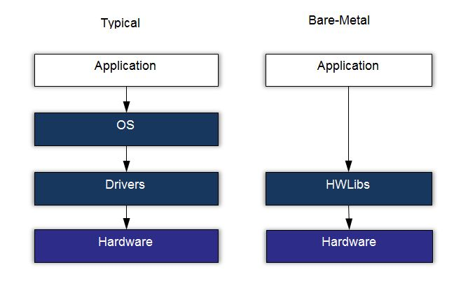

Tutorial 6 - HPS - BlinkLED¶
Nesse tutorial iremos compilar um programa para o HPS (Arm Cortex A) que será capaz de controlar os LEDs e ler os botões da placa que estão conectados ao HPS.

Note pelo diagrama anterior extraído do manual do usuário, existem LEDs e botões conectados diretamente ao HPS, e outros conectados a FPGA. Duas são as possíveis abordagens para programarmos o HPS:
baremetal¶
Faríamos um programa que seria executado no ARM HPS sem nenhum sistema operacional. Como detalhado no diagrama :

Nessa maneira, a aplicação deve ser capaz de realizar toda a inicialização de HW necessária para que o processador rode corretamente. Se a aplicação for executada sobre um sistema operacional, toda essa etapa é de compilação é responsabilidade do SO. Para isso é aconselhável utilizar a IDE da ARM chamada de DS-5
Sistema operacional¶
Diversas são as alternativas de sistema operacional para embarcado, tudo irá depender da especificação da aplicação. É necessário saber se existem requisitos de tempo real, se sim, deve-se considerar utilizar um RTOS ou algum sistema operacional com essa funcionalidade (existe um patch no kernel do linux que o torna mais ou menos real time). Se é uma aplicação que demanda rede, vídeo, processamento de dados, é de se considerar utilizar um Linux da vida (ou BSD, Androuid), já que a facilidade de desenvolvimento de aplicações nessa plataforma é mais fácil (já tem muita coisa pronta e uma comunidade gigantesca).
Com o uso de um sistema operacional a parte referente ao HW é responsabilidade do kernel (ou dos desenvolvedores que estão adequando o kernel ao HW, que é o caso de vocês). Diversos são os ganhos de utilizar um sistema operacional do tipo Linux (as perdas também são grandes: maior ocupação de memória, maior latências, boot lento...) tais como:
- Device drivers
- Portabilidade
- Segurança
- Rede
Linux¶
Nesse tutorial iremos compilar um programa e executar no Linux Embarcado. esse programa será executado no user space. Para isso iremos utilizar a toolchain definida no tutorial anterior.
Iremos utilizar como base o código exemplo da Terasic que está localizado no CD do kit: DE10-Standard-v.1.3.0-SystemCD/Demonstration/SoC/my_first_hps
E crosscopilar esse código para o nosso HPS utilizando o Makefile da pasta.
Note
Esse Makefile só funciona porque configuramos o nosso bashrc com as variáveis de sistemas que ele utiliza.
Por exemplo, a linha SOCEDS_ROOT ?= $(SOCEDS_DEST_ROOT) usa a variável SOCEDS_DEST_ROOT que foi configurara no tutorial anterior, assim como o arm-linux-gnueabihf-...
Executando no target¶
Agora basta copiar o binário criado pela compilação para o cartão de memória e testar o nosso programa no target (HPS).
Note
Com o cartão de memória no host copie o arquivo binário: hps_gpio para a pasta: /root/ do cartão de memória.
Sempre que manipular um dispositivo de memória externo, será necessário fazer um flush do cache para forçar o linux alterar o dispositivo externo, caso contrário a alteração poderá ficar só local ao PC.
$ sync
A função sync é blocante, ficará travada enquanto o linux faz o flush dos dados.
Modificando o código
Faça o programa ler apenas duas vezes o botão, e depois disso termina a aplicação !
Fluxo de desenvolvimento¶
Esse fluxo de desenvolvimento não é dos melhores né? É bom programar no host, mas esse esquema de ter que ficar tirando e colocando cartão de memória, esperar o linux do target subir, logar e testar não faz bem para ninguém. Existem várias soluções para melhorar isso, cada qual com sua vantagem/desvantagem:
- build no próprio target (ruim para o programador, ótimo para dependências, fácil de debugar, lento)
- criar uma vmw arm e compilar nela (bom para o programador, ótimo para dependências, +- fácil de debugar, rápido)
- crosscompilar (bom para o programador, ruim para dependências, difícil de debugar, rápido)
Na entrega 4 vamos aprimorar nosso sistema de compilação e testes.